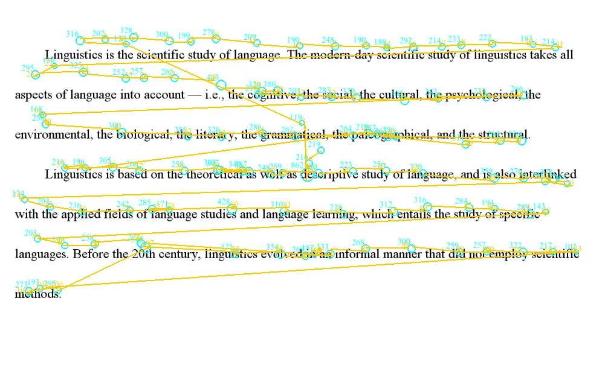

Week 2
Reading

Today's roadmap
- Basic patterns
- Sources of information
- Reading eye movement measures
- Eye movements and word recognition
- Eye movements and sentence processing
Basic patterns
Basic patterns
- Average fixation duration: 200-250ms
- Average saccade length: 7-9 letters
- Saccade length unaffected by the size of the text
- 10-15% of saccades are regressive
- Return sweep from the end of line to the beginning of the next line
- Individual difference in fixation duration and saccade length
Effect of orthography

Sources of information during reading
Sources of information during reading
Foveal vs. Parafoveal vision

Sources of information during reading
Perceptual span in reading
- Perceptual span is asymmetrical during reading.
- In English, this is about 3-4 letters to the left of the fixation center and 14-15 letters to the right.
- Regardless of the writing system, the perceptual span is relatively fixed when measured by number of words (~2 words).
Sources of information during reading
Perceptual span in reading
Sources of information during reading
Perceptual span in reading
- Foveal processing is vital in reading.
- If no info is available in the fovea, reading is extremely difficult.
- Parafoveal vision facilitates reading by allowing different types of info to be processed there:
- Orthography (jugde - judge)
- Phonology (sent - cent)
- Morphology
Sources of information during reading
Experimental paradigms
- Gaze-contingency paradigms
Experimental paradigms
Moving window / Moving mask paradigms

Experimental paradigms
Boundary paradigm
Reading eye movement measures
Reading eye movement measures
Word level:
- First-fixation duration: the duration of the first fixation on a word.
- Single-fixation duration: those cases where only a single fixation is made on a word.
- Gaze duration: the sum of all fixations on a word prior to moving to another word.
- Probability of skipping
Reading eye movement measures
Sentence level (region of interest):
- First-pass duration: first fixation until first time leaving the region.
- Go-past / Regression path duration: first fixation until first time leaving the region to the right.
- Second-pass duration: all refixations on a region after the eye has already moved past that region.
- Total duration: first-pass + second-pass
Eye movements and word recognition
Eye movements and word recognition
Time needed to recognise a visual word depends on:
- Word frequency
- Word length
- Word familiarity
- Age-of-acquisition
- Lexical ambiguity
Eye movements and word recognition
Time needed to recognise a visual word depends on:
- Word frequency
- Word length
- Word familiarity
- Age-of-acquisition
- Lexical ambiguity
- Balanced ambiguous words (coach) > unambiguous words
- Balanced ambiguous words (coach) > biased ambiguous words (bark)
Eye movements and word recognition
Time needed to recognise a visual word depends on:
- Word frequency
- Word length
- Word familiarity
- Age-of-acquisition
- Lexical ambiguity
- Morpheme frequency
- Transparent compound words (punish+ment) &
- Opaque compounds (casual+ty)
Eye movements and word recognition
Time needed to recognise a visual word depends on:
- Word frequency
- Word length
- Word familiarity
- Age-of-acquisition
- Lexical ambiguity
- Morpheme frequency
- Contextual constraint
- Lexical or post-lexical effects?
Eye movements and sentence processing
Eye movements and sentence processing
Incrementality of sentence processing
(1a) Since Jay always jogs a mile and a half this seems like a very short distance to him.
(1b) Since Jay always jogs a mile and a half seems like a very short distance to him.
Eye movements and sentence processing
Incrementality of sentence processing
"Seems like" was more difficult to process in (1b) than (1a)
- The reader has already committed to a syntactic analysis before reading "seems like".
- Despite knowing the sentence hasn't ended.
Eye movements and sentence processing
What we learn from difficulties
Syntactic parsing and semantic interpretation are generally effortless.
But sometimes the reader encounters difficulties, and sentence comprehension breaks down.
We gain insight into the language processing system by tracking when and how difficulties happen.
Eye movements and sentence processing
What we learn from difficulties
Binding Principle A: An anaphor must be bound in its binding domain.
(3a) Jonathan was worried at the hospital. He remembered that the surgeon had pricked herself with a used syringe needle.
(3b) Jennifer was worried at the hospital. She remembered that the surgeon had pricked herself with a used syringe needle.
Eye movements and sentence processing
What we learn from difficulties
Do readers ever consider the distractor (Jonathan/Jennifer) to be the antecedent of herself?
- If they do, (3b) should be more difficult than (3a).
Eye movements and sentence processing
What we learn from difficulties
Sturt (2003)'s findings:
- No difference between (3b) and (3a) at the anaphor in early measures (first fixation).
- Longer reading times for (3b) than (3a) at the anaphor in late measures (second-pass).
Eye movements and sentence processing
What we learn from difficulties
Sturt (2003)'s findings:
- Readers quickly use Principle A to rule out the distractor when they first see the anaphor.
- But they reconsidered the distractor - overriding Principle A - at a later stage.
- Following difficulties associating herself with the surgeon.
Eye movements and sentence processing
Variability in eye movement measures
- No clear mapping between eye movement patterns and cognitive processes during reading.
- Same manipulations can lead to different results across studies.
Eye movements and sentence processing
Variability in eye movement measures
Reasons for variability:
- Difference in reading strategy?
- Dissociation between the eye and the parser?
Today's roadmap
- Basic patterns
- Sources of information
- Reading eye movement measures
- Eye movements and word recognition
- Eye movements and sentence processing